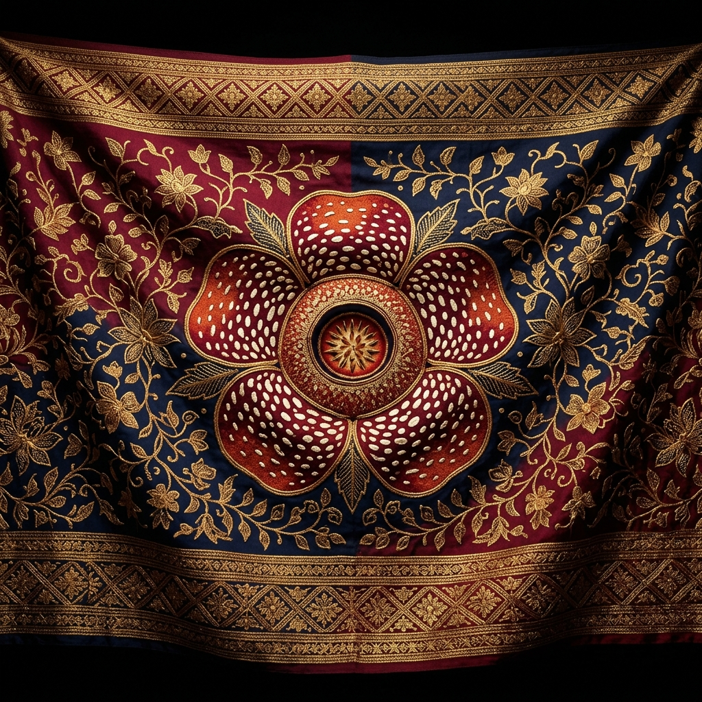
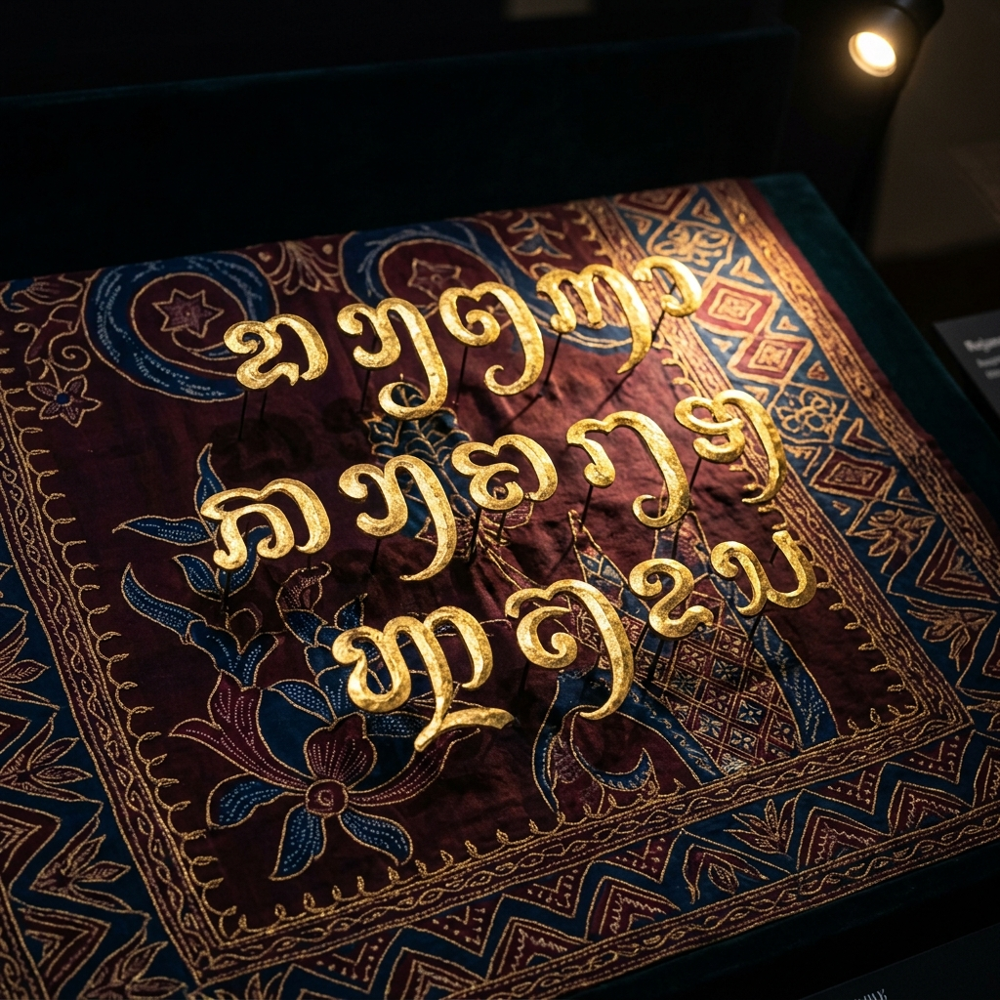
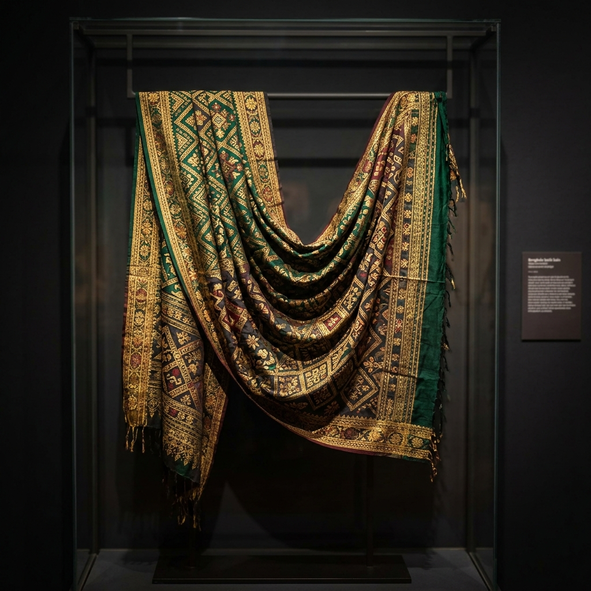
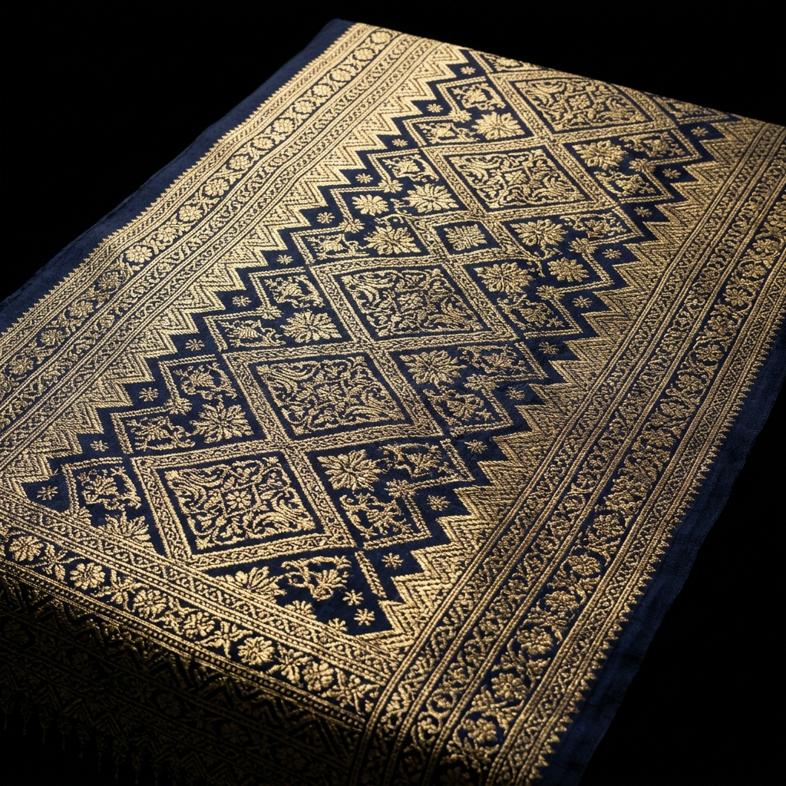

Museum Digital Interaktif
Digitalisasi Aksara Kaganga — Menjembatani Warisan Abad ke-4 dengan Teknologi Abad ke-21
Koleksi lengkap aksara kuno Rejang dari tanah Bengkulu. Sentuh setiap aksara untuk mempelajari cara bacanya.
Perjalanan panjang Aksara Kaganga melintasi masa
Aksara Kaganga dipercaya berasal dari keluarga aksara Brahmi yang menyebar ke Nusantara melalui jalur perdagangan India. Aksara ini berkembang di tanah Rejang, Bengkulu, menjadi sistem tulisan yang unik dan khas.
Pada masa kerajaan Rejang, aksara Kaganga digunakan secara luas pada kulit kayu, tanduk kerbau, dan bambu sebagai media komunikasi, hukum adat, dan sastra.
Melalui proyek DIAGA, Aksara Kaganga dihidupkan kembali secara digital menggunakan standar Unicode U+A930–U+A95F, memungkinkan pelestarian tanpa batas ruang dan waktu.
Konversi teks Latin ke Aksara Kaganga atau sebaliknya secara langsung
Contoh cepat:
Ketik langsung menggunakan aksara Kaganga asli
Huruf Dasar
Huruf Vokal & Tanda Vokal
Tanda Koda (Konsonan Akhir)
Uji kemampuanmu mengenal, menyusun, dan membaca Aksara Kaganga
Total XP
0 XP
Kenali Huruf
Lihat glif, pilih bacaan Latin yang benar
Susun Suku Kata
Susun glif yang benar untuk kata Latin yang diberikan
Baca Ka-Ga-Nga
Lihat rangkaian glif, pilih bacaan Latin yang benar
Jelajahi keindahan batik tradisional Bengkulu dalam format digital beresolusi tinggi

Motif bunga Rafflesia Arnoldii yang menjadi ikon flora Bengkulu, dipadukan dengan ornamen tradisional Rejang.

Aksara Kaganga bertinta emas di atas kain sutra biru tua — perpaduan seni kaligrafi dan tekstil Bengkulu.

Kain songket seremonial dengan benang emas yang digunakan dalam upacara adat masyarakat Rejang.

Songket tradisional dengan motif geometris khas Bengkulu yang ditenun menggunakan teknik turun-temurun.